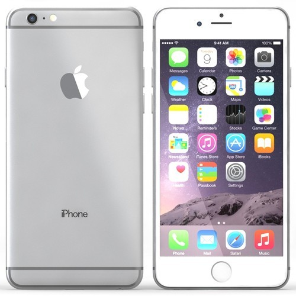

NVIDIA Geforce GTX 1050Ti for Desktop Level Performance
128 GB SSD for Reduced Boot Up Time and in Game Loading
Upgradable SSD Upto 512 GB and RAM Upto 32 GB
Dual Fan Cooling with Metal AeroBlade 3D
Intel Core i5 Processor (7th Gen)
8 GB DDR4 RAM
64 bit Windows 10 Operating System
1 TB HDD|128 GB SSD
15.6 inch Display

32 GB ROM
4.7 inch Retina HD Display
12MP Rear Camera
5MP Front Camera
Li-Ion Battery
Apple A9 64-bit processor and Embedded M9 Motion Co-processor
FOGG is known for its edgy and affordable range of watches.
Crafted from a rich quality material, this watch for men is light in weight and long lasting too.
You can show it off with your casual & formal attires to grab compliments from everyone around.
Being easily Affordable to make it sit right on your wrist, it can add a physical dimension to your Style.
World's one of the best Japanese movement and sony battery helps to run the watch for years & years.